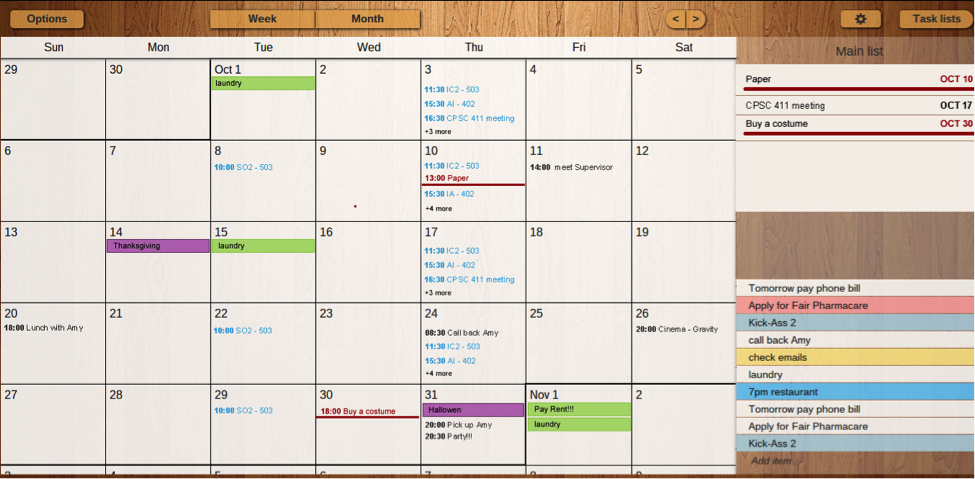
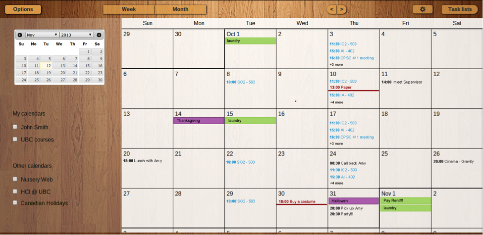
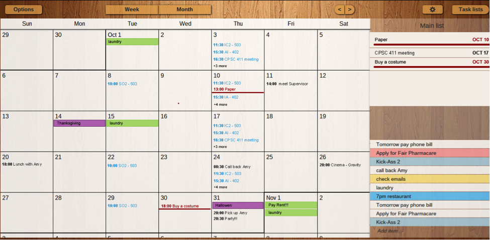
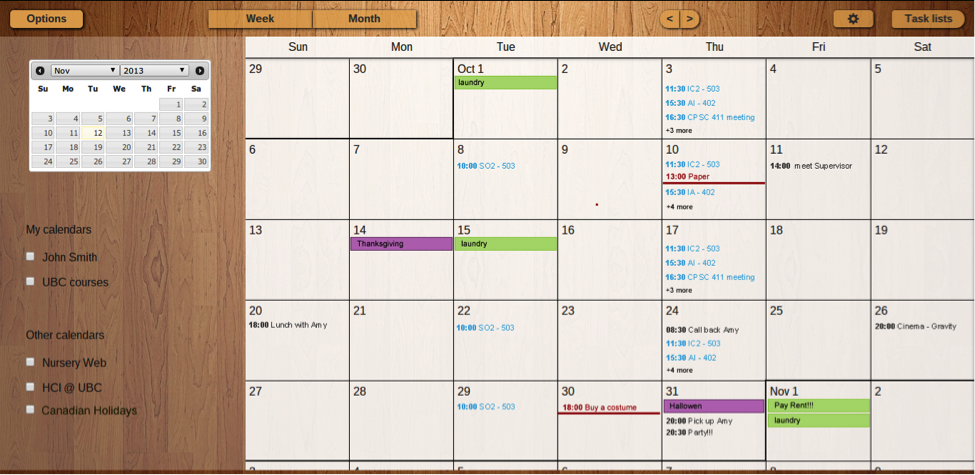

Kamyar's Portfolio
Task Management Tool
This project aims to integrate calendar and todo lists in a single tool. This is especially intended to be used by students due to their dense schedules with many due dates. Although there are many well-designed calendar and todo list applications, not many of them integrate these two related but conceptually different tools together. We have tried to prototype and try some of the ideas that could achieve this goal in this project. We defined this project as the final project of our graduate human-computer interaction course. We were a team of three people who worked on this project. I was particularly involved in all stages of the project except for implementation of the med-fi web-based prototype. A med-fi prototype of this project is hosted here.

 


